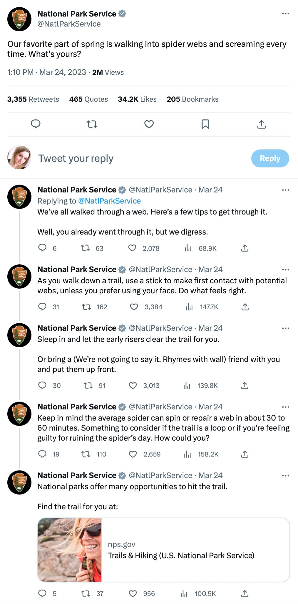
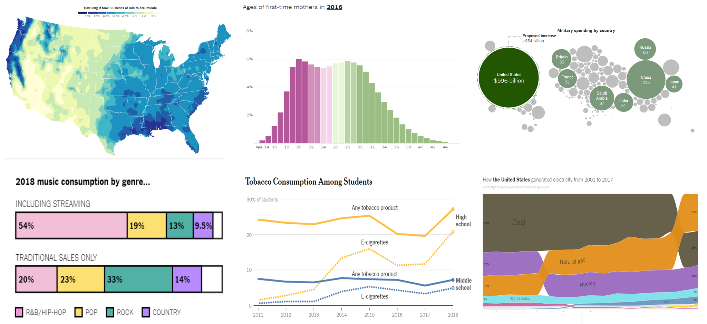
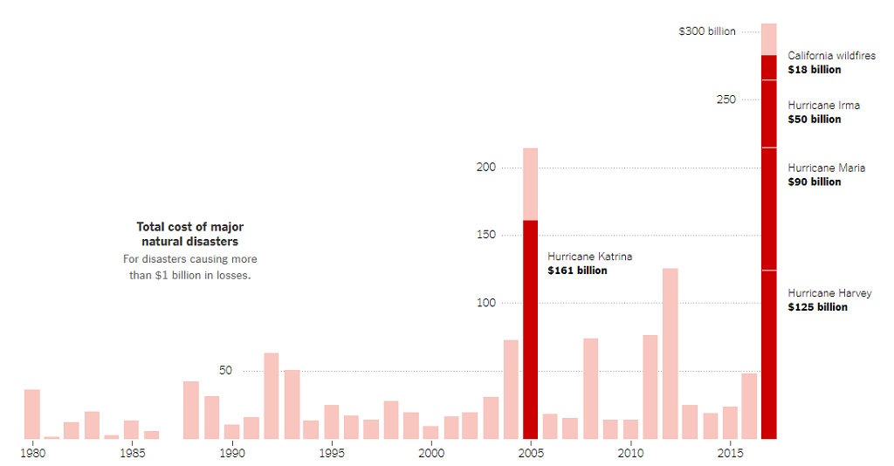
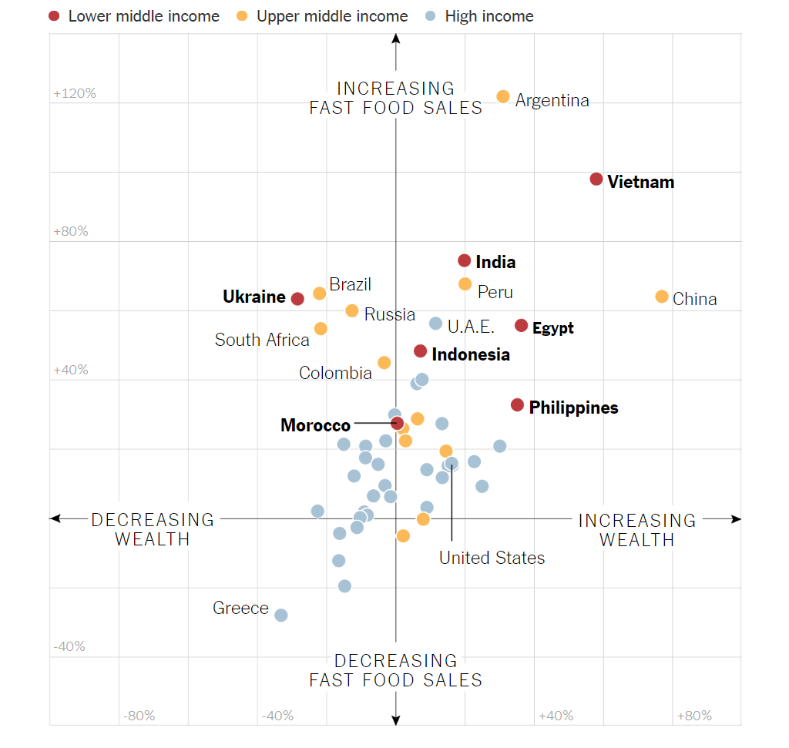

What is data visualization?
IN1002B: Data Visualization for Decision Making
Agenda
- Introduction to data science
- Three principles of data visualization
- Activity
- Storytelling
Introduction to data science
Data science is …
a multidisciplinary field that uses scientific methods, processes, algorithms and systems to extract knowledge and insights from vast amounts of structured and unstructured data.
. . .


The scheme of data science
Provost, F., & Fawcett, T. (2013). Data Science for Business: What you need to know about data mining and data-analytic thinking. O’Reilly Media, Inc.
Business understanding
Business understanding refers to defining the business problem to be solved.
The goal is to reframe the business problem as a data science problem.
Often, reframing the problem and designing a solution is an iterative process.
Data understanding I
If the goal is to solve a business problem, the data that makes up the raw material available from which the solution will be built.
The available data rarely matches the problem.
For example, historical data is often collected for purposes unrelated to the current business problem or for no explicit purpose at all.
. . .
Our goal is to turn data into information that answers useful questions.
Data types
Text

Images

Video

Audio
Numerical data
Data science methodology is based on numerical data given in tables.

In fact, texts, images, videos or audios are transformed into this format to process them.
. . .
In this course, we will assume that the data is in a table.
Problem Situation
TBD
Goal of the problem situation
TBD
The three principles of data science
What is Data Visualization?
“A visualization [of data] is any visual presentation intended to reveal evidence, making the invisible visible.” Alberto Cairo (2015).



At its core, data visualization allows you to delve into complex datasets to extract meaningful insights using graphical displays.
Data visualizations are primarily concerned with providing evidence and enabling the audience to explore and draw their own conclusions about what the visualizations reveal about the data.
. . .
Data visualization has 3 key principles…
As data scientists, we create data visualizations in order to understand our data and explain our analyses to other people. A plot should have a message, and it’s our job to communicate this message as clearly as possible.
Principle 1: Define the Message or Question
Formulate the question of interest or the message you want to convey.


El mensaje puede ser una pregunta
- What is the key comparison?
- How do we emphasize it?
- Do you have reason to expect that one group/observation might be different?
- Why might your finding about shape matter?
- What additional comparison might add value to the investigation?
- Are there any potentially important features to compare against?
Principle 2: Turn Data into Information
Your graph should use data to convey the message or answer the question. In other words, it should transform data into information.
Enhance your graph with color symbols and text to convey additional information.
Principle 3: Apply Graphic Design Principles
- Objects are easily identifiable by color.
- Use direct labels instead of a legend.
- Elements such as text, lines, and shapes of the same nature should look similar.
- Balance graphics and text.
- Be cautious with default settings in visualization software.
- Use a grid-based layout to organize your visualization.
Don’t limit yourself to simple elements. Enhance your graph with color symbols to convey additional information. If possible, add context with markers and reference labels.
Additionally, include a legend in the graph that describes key features and summarizes its conclusions.
Example
Principle 1: It is cheaper to take Uber than to own a car in four of the five largest cities in the USA.
| City | Uber | Auto |
|---|---|---|
| New York City | 142 | 218 |
| Washington D.C. | 96 | 130 |
| Chicago | 77 | 116 |
| Los Angeles | 62 | 89 |
| Dallas | 181 | 65 |
The estimated costs are based on a twice-daily 10.4 mile one-way commute at peak times over the course of a week using either the UberPool option (where available) or alternatively UberX vs the cost of using a personal vehicle (including any associated costs of ownership). Study conducted in February 2017.
Principle 2: Turn data into information.
Principle 3: Apply Graphic Design Principles.
“The greatest value of a picture is when it forces us to notice what we never expected to see.” John W. Tukey.

. . .
https://www.storytellingwithdata.com/ is an excellent guide on data visualization.